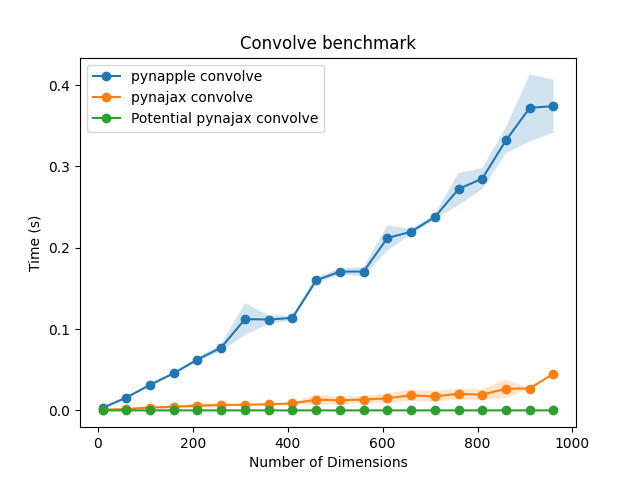

pynajax


Welcome to pynajax, a GPU accelerated backend for pynapple built on top on jax. It offers a fast acceleration for the core pynapple functions using GPU.
Warning
This package is not meant to be used on its own. It should only be used through the pynapple API.
Installation
Run the following pip command in your virtual environment.
For macOS/Linux users:
pip install pynajax
For Windows users:
python -m pip install pynajax
Alternatively, you can install pynapple and pynajax together.
pip install pynapple[jax]
Basic usage
To use pynajax, you need to change the pynapple backend using nap.nap_config.set_backend. See the example below :
import pynapple as nap
import numpy as np
nap.nap_config.set_backend("jax")
tsd = nap.Tsd(t=np.arange(100), d=np.random.randn(100))
# This will run on GPU or CPU depending on the jax installation
tsd.convolve(np.ones(11))
Benchmark
This benchmark for the convolve function was run on a GPU.

See the documentation for others benchmarks.